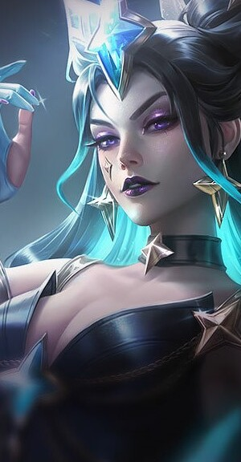
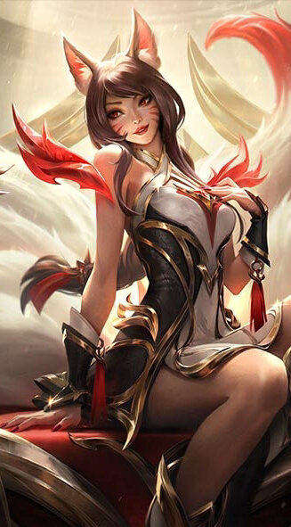
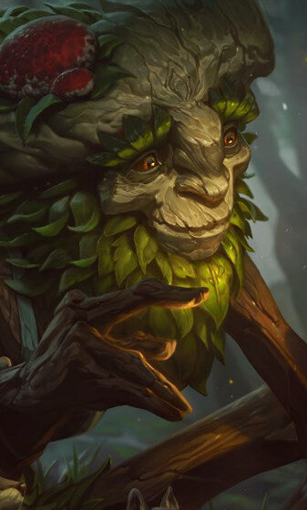
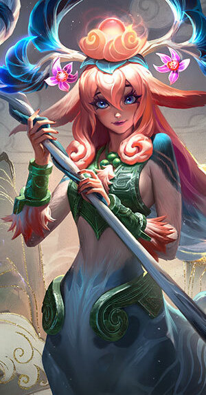
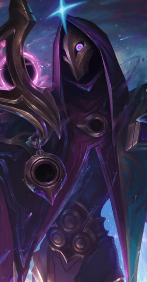
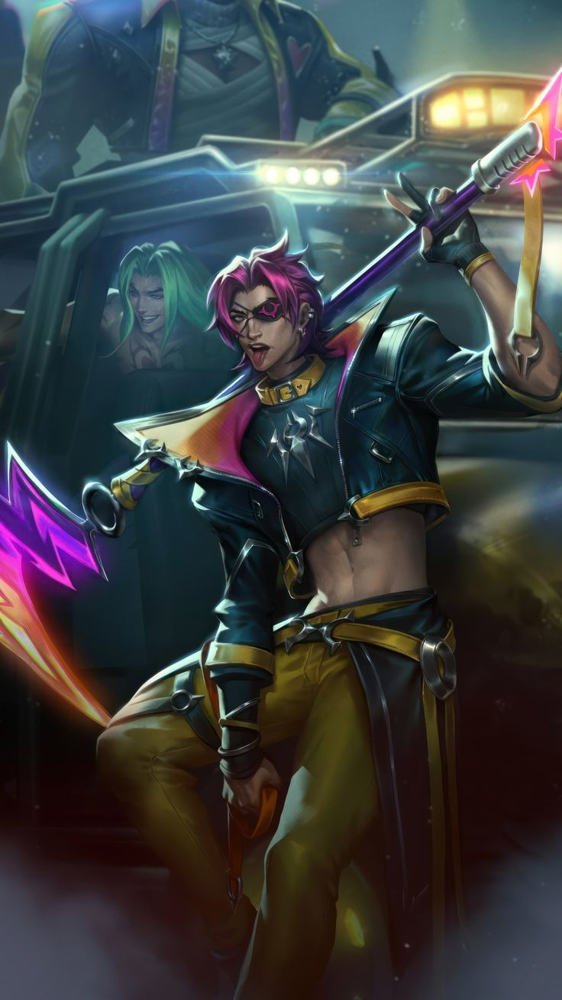
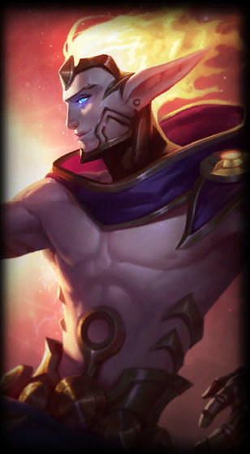

Jonia esta formada por una serie de provincias aliadas desperdigadas a lo largo y ancho de un inmenso archipiélago que muchos conocen como las Tierras Primigenias. El equilibrio es una de las piedras angulares de la cultura jonia, por lo que los límites que separan el mundo material del espiritual son aquí más difusos que en el resto de Runaterra, especialmente en las profundidades de sus bosques y lo alto de sus cumbres.
Yone
EYone es un maestro espadachín que una vez vivió a la sombra de su hermano Yasuo. Tras su muerte, Yone fue resucitado por una fuerza desconocida, quedando atrapado entre el mundo de los vivos y los espíritus. Ahora, porta dos espadas: una de acero tradicional y otra forjada con el poder de los demonios. Con habilidades ágiles y precisas, Yone combina daño físico y mágico, destacando en combates cuerpo a cuerpo mientras explora su trágico destino.
Syndra
Syndra es una maga implacable y talentosa que manipula esferas de energía oscura para devastar a sus enemigos. Nacida con un poder inmenso, su búsqueda de libertad la llevó a desafiar las restricciones impuestas por su maestro, lo que la transformó en una figura de temida fuerza arcana. Su estilo de juego se centra en ataques a distancia que combinan control de masas y explosiones de daño, convirtiéndola en una amenaza constante en el campo de batalla.
Ahri
Ahri es una criatura mágica vastaya que mezcla encanto y letalidad. Inspirada por las leyendas de zorros míticos, su naturaleza curiosa la lleva a aprender sobre los humanos mientras se alimenta de sus emociones. Ahri utiliza su capacidad de seducción para manipular a sus oponentes, mientras su movilidad excepcional le permite entrar y salir de los combates con facilidad. Es conocida por sus habilidades de explosión mágica y control en equipo.
Ivern
Ivern es un pacífico y protector espíritu de la naturaleza que busca mantener el equilibrio en la jungla. En lugar de eliminar a los campamentos neutrales, los libera, forjando un vínculo único con la fauna. Ivern también puede convocar a Daisy, un poderoso gólem que ayuda en el combate. Como un jungla de apoyo, Ivern se especializa en proteger y fortalecer a sus aliados con habilidades únicas que fomentan el trabajo en equipo.
Lillia
Lillia es un espíritu tímido pero decidido, que vaga por el mundo recolectando los sueños olvidados de las criaturas vivas. Inspirada por los sueños que protegen su bosque, Lillia busca restaurar la magia perdida del mundo. Su estilo de juego combina movimientos fluidos con daño continuo, y su habilidad de dormir a los enemigos puede cambiar el curso de cualquier batalla. Su encanto reside en su naturaleza curiosa y protectora.
Jhin
Jhin es un criminal obsesionado con la perfección del arte mortal. Ve cada disparo y cada asesinato como una obra de arte que merece ser admirada. Equipado con su arma única de cuatro disparos, Jhin combina precisión y estrategia, infligiendo un daño devastador en el momento justo. Su capacidad para controlar el espacio con trampas y su ultimate de largo alcance lo convierten en uno de los tiradores más temibles y meticulosos.
Kayn
Kayn es un guerrero audaz que porta a Rhaast, una guadaña viviente de origen Darkin. La lucha interna entre el Darkin y su voluntad propia define a este campeón, quien puede elegir entre dos caminos: la forma sombra letal, que prioriza asesinatos rápidos y movilidad, o la forma Darkin, que resalta en combates prolongados con curación y resistencia. Kayn es único por su capacidad para atravesar muros y adaptarse a las necesidades del equipo durante el juego.
Rakan
Rakan es un bailarín vastaya carismático que utiliza su agilidad para distraer y desorientar a los enemigos mientras protege a sus aliados. Como compañero inseparable de Xayah, su estilo de combate es una mezcla de movilidad extrema y habilidades para iniciar peleas en equipo. Con su habilidad para curar y deslumbrar, Rakan combina utilidad y encanto, siendo una pieza clave en cualquier estrategia de equipo.